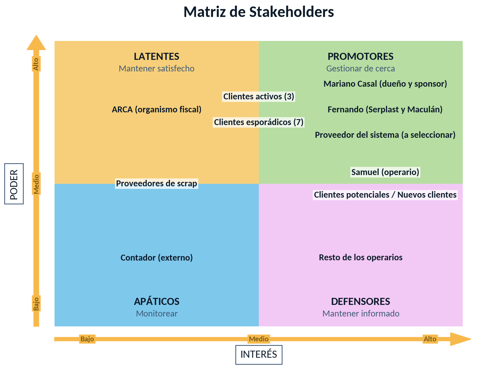

Línea A
Venta de material propio
Compra scrap postindustrial, lo clasifica por tipo y color, lo muele o agruma y, si el cliente lo pide, lo extruye y filtra. Lo vende en bolsas de 25 kg o bolsones de 600 kg.
Farriplast compra scrap a fábricas plásticas, lo procesa y lo vende como materia prima. También procesa el scrap que le traen sus clientes. Delta hizo el relevamiento organizacional y el análisis de su arquitectura empresarial para proponer una mejora en la gestión.
Compra scrap postindustrial, lo clasifica por tipo y color, lo muele o agruma y, si el cliente lo pide, lo extruye y filtra. Lo vende en bolsas de 25 kg o bolsones de 600 kg.
Procesa el material fallado de cada cliente y se lo devuelve listo para reutilizar. Se cobra solo el servicio de procesamiento.
Llega en camiones, en bolsones de 600 kg, fardos o bolsas más chicas.
Se separa por tipo y color.
El material blando se agruma y el duro se muele.
Solo cuando el cliente lo necesita.
En bolsas de 25 kg o bolsones de 600 kg.
Sus clientes son empresas de productos de higiene, de limpieza y jugueterías del AMBA.
Transformar scrap plástico postindustrial en materia prima de calidad para la industria plástica del AMBA, mediante procesos eficientes, flexibles y basados en su experiencia.
Ser una empresa referente en la recuperación de plástico postindustrial en el AMBA, reconocida por la calidad de sus procesos, la cercanía con sus clientes y su crecimiento sostenible.
Satisfacción de clientes de 90% o más y retención de 85% o más de los clientes activos.
18 mesesEntregas a tiempo de 95% o más y rechazos por calidad por debajo del 2% del volumen entregado.
12 mesesMás volumen mensual de plástico reciclado comercializado.
24 mesesUn nuevo galpón alquilado y en funcionamiento.
12 mesesLas metas las propuso el equipo a partir del diagnóstico y se validan con Mariano.
Compras, ventas, cobranzas y stock pasan por una sola persona.
Las operaciones se anotan en un cuaderno y después se pasan al WhatsApp de cada cliente o proveedor. La única planilla de Excel controla el stock de un solo cliente de fason.
Los procesos funcionan, pero se aprendieron en la práctica y no están documentados.
Saber cuánto material y espacio hay en planta, y de dónde viene y adónde va cada material.
Registrarlas y seguirlas para dedicarles menos tiempo y decidir con información confiable.
Conocer el costo y el margen de cada proceso o material para evaluar inversiones como el nuevo galpón.
Medir las pérdidas de material de cada proceso.
El equipo que trabajó en el caso Farriplast.
Belén Casal
Product Owner
Julieta Holcman
Project Manager
Rodrigo Pérez Suzuki
Scrum Master
Sol Beraja
UX/UI
Clara Murature
Tech Lead
Martina Szymsiowicz
Analista de negocio
El diagnóstico de partida en las cuatro dimensiones de la arquitectura empresarial.
En dos o tres años Farriplast mantiene su producto y su modelo de negocio. Lo que cambia es cómo registra y usa su información.
Pasar del registro manual y duplicado a un registro único, cargado una sola vez en el lugar y en el momento en que ocurre.
Desconcentrar la gestión. Los operarios registran los movimientos de material en planta y Mariano controla desvíos y toma decisiones.
Convertir la trazabilidad en un servicio. El reporte que hoy recibe un solo cliente de fason se extiende a todos.
Lo que Farriplast necesita poder hacer en cada una de las cuatro dimensiones de su arquitectura empresarial.
El equipo comparó cuatro escenarios según dónde se instala el software y cómo se implementa. Eligió el escenario 4: un sistema de gestión (ERP) en la nube, con módulos que se activan por etapas. Es un producto que ya existe en el mercado, no se desarrolla software a medida.
Farriplast no tiene servidores, red corporativa ni soporte técnico. El proveedor se encarga del resguardo de la información.
El cuaderno sigue en paralelo hasta una fecha de corte acordada con Mariano.
Se paga por los módulos que se usan y cada módulo se suma cuando se decide.
La fase 1 cubre las dos necesidades de mayor prioridad de Mariano: control de stock y compras, ventas y cobranzas. El sistema elegido tiene que poder generar desde el primer día el reporte mensual que hoy recibe un cliente de fason.
Incorporar en 24 meses un sistema de gestión en la nube que centralice stock, compras, ventas, cuentas corrientes y la demás información crítica de Farriplast.
Plan propuesto por el equipo, a validar con Mariano.
Al inicio lo usan Mariano y Samuel. De noche se anota en la pizarra y Samuel lo carga al día siguiente.
Cada parte interesada está ubicada según su poder e interés, con el tratamiento que le damos.

Cobertura de las diez capacidades de la arquitectura destino
Facilidad de uso, nube, celular y computadora, perfiles de acceso y portabilidad de los datos
Demostración previa, soporte remoto, capacitación y acompañamiento por fases
Cuota por módulos, implementación, equipos y costo a tres años
Se buscaron sistemas generales que se adapten al fason, no sistemas hechos solo para fason.
Con Odoo y Tango se arma la matriz de evaluación y la comparación económica. Antes de contratar, Mariano ve una demostración del sistema. La decisión de contratar es suya.
Próximamente
Próximamente
Próximamente
Próximamente
Próximamente
Próximamente